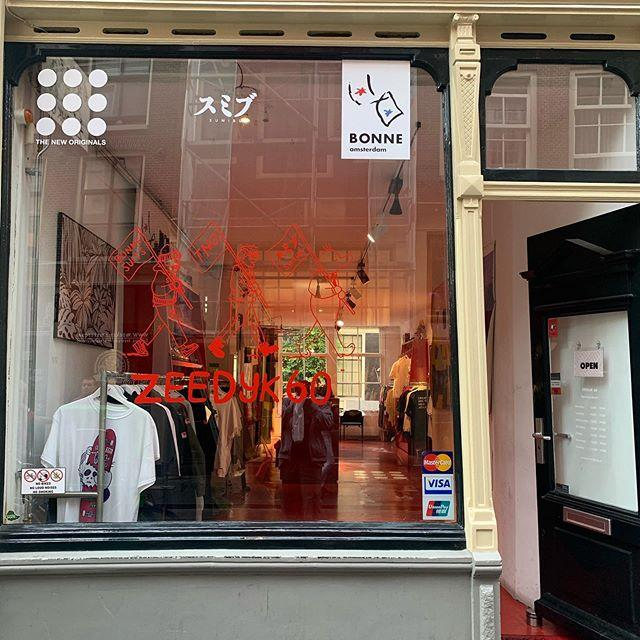
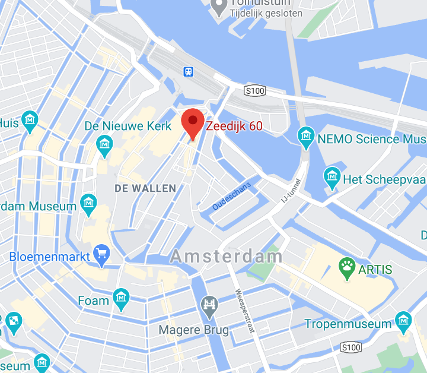

ZEEDIJK 60 IS AN AMSTERDAM BASED MULTI-BRAND RETAIL EXPERIENCE.
After being friends for long before any of the brands were even founded, The New Originals, SUMIBU and Bonne Suits joined forces to start their first own store in Amsterdam.
The store is straightforwardly called Zeedijk 60, out of pride for its location. The Zeedijk is an infamous street, renowned for its diversity (housing legendary gaybars, a buddist temple, Asian restaurants and hip clothing stores) and its rough past (it used to be reserved for drug addicts, dealers and prostitutes).
At Zeedijk 60, you will always get the best advice, as there is at least one Brand-Expert present at the store everyday.

